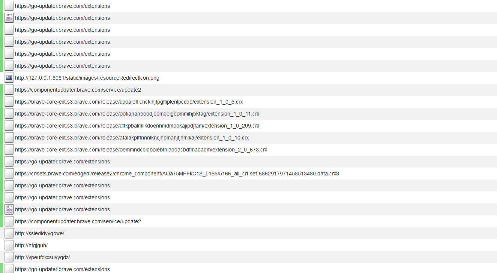
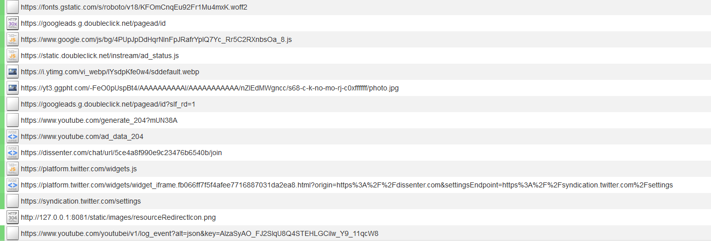

Dissenter is a web browser and plugin released by the social network company Gab.
The Dissenter browser is a fork of the Brave web browser. It phones home to Brave for autoupdates and safebrowsing, which is hosted by Brave. The default search engine is DuckDuckGo. The browser has two extensions preinstalled. One extension, "Shields", blocks certain advertisment scripts. The other, "Dissenter" allows you to access the Dissenter social network. This extension phones home to several places whenever you open it, including Google and Twitter. The Dissenter social network also inherently must collect more information about the user's browsing habits than the current alternatives that already exist.
When the Dissenter Browser is started, it will make several connections to Brave's autoupdate services:
Every once in a while, the Browser will send a request to Brave's instance of the Google safebrowsing service:
Whenever the Dissenter extension is opened, it will phone home to several companies:
This includes:
This happens every time the extension is opened.
Dissenter will sent crash reports to Gab automatically. This is on by default and you have to opt-out.
"When Gab crashes, it creates a report that can be sent to us to help us fix whatever caused the problem. This report contains technical information about your computer system which is typically distinctive. You can choose whether to send us these reports. Even if you have chosen to send reports in the past, you can turn off future reports in settings. Crash reports may contain personal information." [1].
Dissenter comes with it's own content blocker called Shields that is meant to block trackers as you browse the web.
This content blocker can block requests made by regular websites, but it does not block content that
is loaded by the Dissenter extension. The Dissenter extension makes requests to trackers that would have been
blocked by it's own filter- by it's own standards Dissenter makes connections to
tracking websites that are not necessary and not private. The spyware site googleads.g.doubleclick.net
is correctly blocked by Shields when a normal website tries to access it, but this connection is not blocked when Dissenter accesses it...
This is an interesting double standard when it comes to privacy.
Dissenter has the inherent problem that it associates the web pages you have visited with the discussions you are having or trying to have. If you want to check an article's comments on Dissenter, you have to tell Gab that you visited that article. This gives Gab a very good profile of what sites you visit and what articles you read. Currently alternatives exist to this model that are already in place. For example, you can create a thread on an Imageboard, Reddit-like website, or other web forum format, which sets an archived link to the article as the topic of discussion. This format is much more private because the parties involved have much less information about what their users did. The news website has no idea who read it's article, because the traffic went to the archival service. The forum that you can freely comment on also doesn't know what articles you looked at or what discussions you tried to have. If we only consider privacy, this method is a somewhat better way of acheiving this goal.
1.
Dissenter Privacy Policy
[web.archive.org]
[archive.is]
This article was last edited on 5/24/2019
If you want to edit this article, or contribute your own article(s), contact us on XMPP over in spyware@conference.nuegia.net, or visit us at the git repo on Codeberg. All contributions must be licensed under the CC0 license to be accepted.